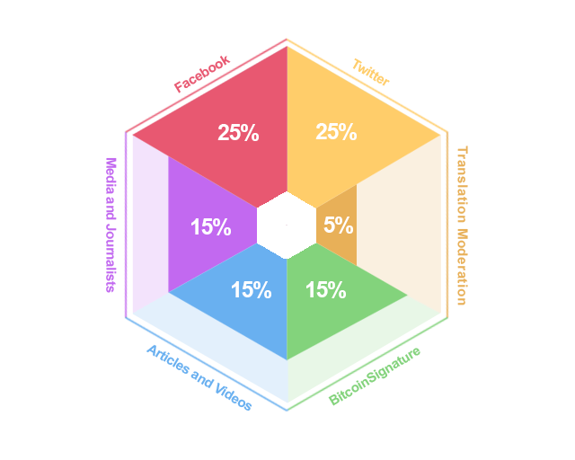

Bounty Campaign
Cryptocurrency is the currency of the future and we believe that we can utilize it to help developers and incentivize gamers around the world. PlayBunk will generate a new cryptocurrency token to support our service and fund our initial operations, which includes Development, Marketing, Business Development, and Strategic Partnerships.
Our bounty program aims to increase awareness of PlayBunk platform to the community and its benefits to as many people as possible.
Through the bounty program, participants can help us spread the word about our platform and get generously rewarded for it.
How to earn coins via our
Bounty Program
In the PlayBunk token sale, there will be 888,000,000 BUNK tokens issued in total. We will distribute 26,640,000 BUNK tokens as bounty rewards.
To earn and receive BUNK tokens, you should perform as many bounty tasks as you want by following the requirements for each bounty and submitting a Bounty Reward Request Form for each task you performed.
Each bounty task will be validated before the tokens are distributed. Only tasks that followed the bounty program terms will be eligible to receive the rewards.
By completing bounty tasks you will receive bounty-stakes, which are divided in the following categories: twitter, facebook, bitcointalk signature campaign, bitcointalk translation and moderation, writing blog posts and posting articles in popular media. At the end of the token sale, we will distribute 26,640,000 BUNK coins proportional to your bounty stakes for each category.
TWITTER FOLLOW & REPOSTS
Earn bounty stakes by retweeting official news.
- Follow our official twitter page.
- Retweet news marked with #PlayBunkICO from our official account within 5 days after their publication.
- Submit a Bounty Reward Request Form for us to validate your bounty claim.
- The total amount of BUNK tokens distributed for this category is 6,660,000 BUNK.
Each retweet will earn you the following amount of stakes:
49 followers or less — not eligible
From 50 to 99 followers — 10 stakes
From 100 to 249 followers — 25 stakes
From 250 to 999 followers — 60 stakes
From 1,000 to 9,999 followers — 120 stakes
10,000 followers and more — 250 stakes
- Follow our official twitter page.
- Tweet the info below in your twitter page:
- Pin the tweet on your profile page.
- Submit a Bounty Reward Request Form for us to validate your bounty claim.
- The total amount of BUNK tokens distributed for this category is 6,660,000 BUNK.
p.jpg)
Content:
Join the PlayBunk cryptocurrency campaign now. Visit our website for details.
Each tweet will earn you the following amount of stakes:
49 followers and less — not eligible
From 50 to 99 followers — 20 stakes
From 100 to 249 followers — 50 stakes
From 250 to 999 followers — 120 stakes
From 1,000 to 9,999 followers — 240 stakes
10,000 followers and more — 500 stakes
Note:
Your Twitter account shoud be at least 4 months old.
We count ONLY the posts that are marked with #PlayBunkICO by our team.
Only one “Pin, Post & Retweet” per twitter account will be accepted.
Do not delete your tweet until the token sale campaign ends.
FACEBOOK FOLLOW & REPOSTS
Earn bounty stakes by liking our Facebook page and sharing our posts, or by liking our facebook page and posting a standardized post.
- Like and follow our official facebook page.
- Share our official page posts marked with #PlayBunkICO
- Submit a Bounty Reward Request Form for us to validate your bounty claim.
- The total amount of BUNK tokens distributed for this category is 6,660,000 BUNK
- Like and follow our official facebook page.
- Post the info below in your facebook page:
- Submit a Bounty Reward Request Form for us to validate your bounty claim.
Content:
Join the PlayBunk cryptocurrency campaign now. Visit our website for details.
Each share will earn you the following amount of stakes:
49 friends and less — not eligible
From 50 to 99 friends — 10 stakes
From 100 to 249 friends — 25 stakes
From 250 to 999 friends — 60 stakes
From 1,000 to 9,999 friends & followers — 120 stakes
10,000 friends & followers and more — 250 stakes
Note:
Your Facebook account shoud be at least 4 months old.
We count ONLY the posts that are marked with #PlayBunkICO by our team.
Only one “Share and Post” per facebook account will be accepted.
All posts must be made public.
Do not delete your post or re-posts until the token sale campaign ends.
BITCOINTALK TRANSLATION AND THREAD MODERATION
- Apply through this form to book your language ANN translation and thread moderation.
- The total amount of BUNK tokens distributed for this category is 1,332,000 BUNK
Translations will be rewarded as:
40 stakes for an ANN translation
20 stakes for our “big post” translation
5 stakes per page in your thread
Note:
We will ban and will not send BUNK coins to spammers and multi accounts.
Receiving negative trust or ban during your participation in our campaign will result in you being disqualified from our campaign receiving nothing.
If we feel there's a lot of spam posts you're making you will be removed from the campaign and receive no payment.
WRITE A POST IN YOUR BLOG/SOCIAL MEDIA
- 1. Write a post about PlayBunk in any language, with at least 1,000 characters and containing links to www.playbunk.com or create a Youtube video with at least 1 minute length about token sale of PlayBunk.
- Submit a Bounty Reward Request Form for us to validate your bounty claim.
- The total amount of BUNK tokens distributed for this category is 3,996,000 BUNK
Each article completed will earn you the following stakes:
Standard (10 stakes)
Nice (25 stakes)
Extraordinary (90 stakes)
*dependent on creativity and reach
Note:
All posts must be made public.
Only one “Post” per blog or social media account will be accepted. Do not submit more than one reward request for this activity.
Do not delete your post or re-posts until the token sale campaign ends.
How and when will you receive the rewards
We will distribute 26,640,000 BUNK tokens in proportion to the number of stakes each bounty campaign participant has earned in each category.
For example, after counting all Twitter retweets, we will make a table where everyone who re-posted will see their bounty stakes earned in the Twitter category. Since there are 6,660,000 BUNK tokens dedicated to the Twitter category, those tokens will be distributed among all members participating the bounty campaign according to the number of stakes they have earned. Then we will continue to the Facebook category, then the Bitcointalk Signature campaign, and so on.
To summarize, the stakes earned in each category will NOT be pooled together, but rather the tokens will be divided amongst the participants in each category separately.
The information about earned stakes is available for view below:
Twitter
Facebook
Signature Campaign
Transation and Moderation
Blog and Post
Publish an Article in Media
Once all of the stakes are counted, you will be notified via email of your BUNK tokens. Tokens will be distributed once PlayBunk blockchain goes live.
If you have any questions regarding the bounty program, please contact us using the dedicated email address for the bounty program info@dogbeardgames.com. Feel free to reach out to us any time; we are glad to help.